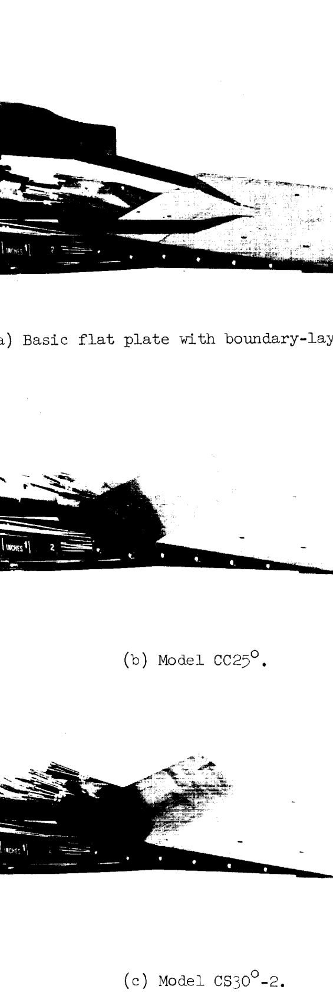
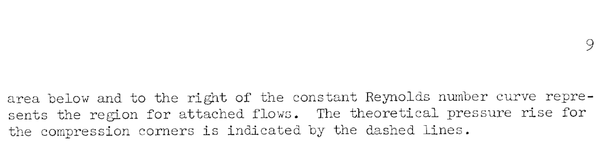
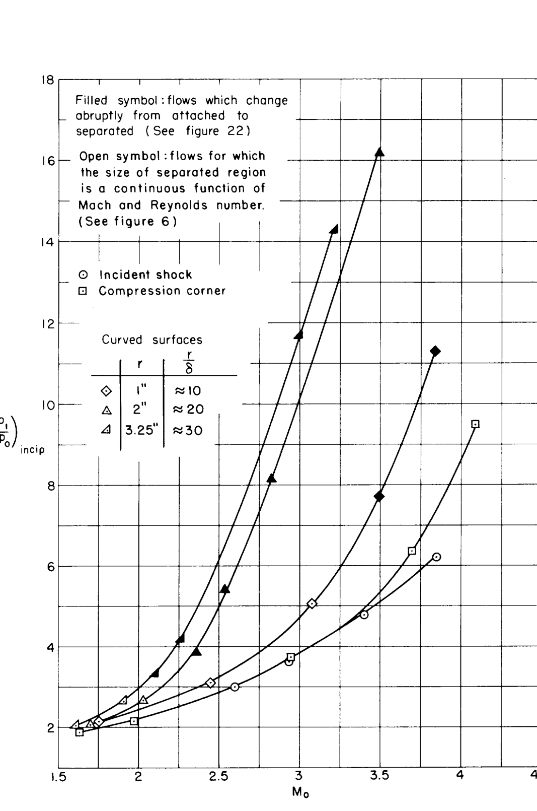
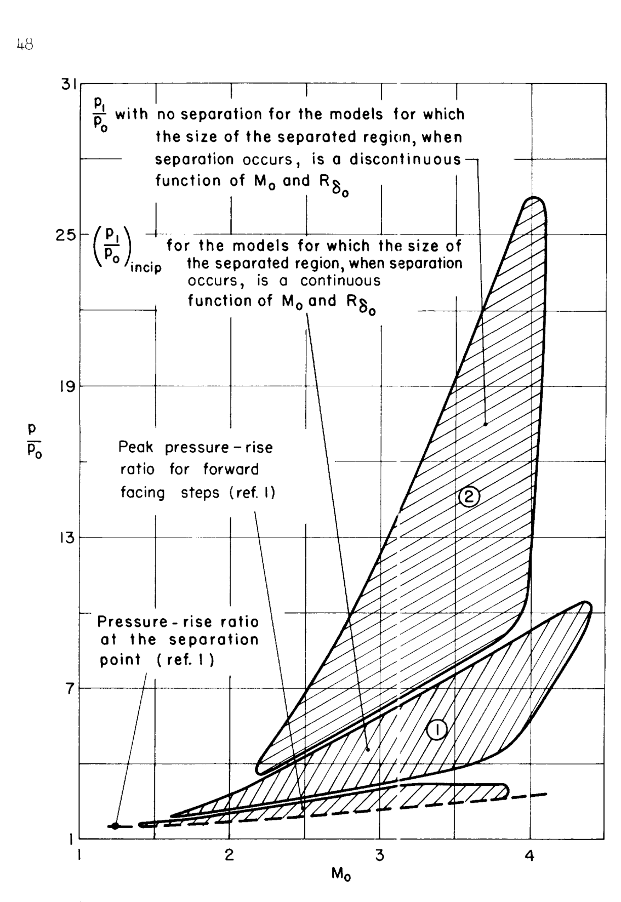

01中文摘要
实验研究二维超声速流中压缩拐角、不同半径曲面和入射激波诱导的湍流边界层分离，目的是为压气机叶片、襟翼、扰流板和扩压器等设计提供依据。用纵向静压分布由一个拐点变为三个拐点的特征判断分离。试验马赫数1.6～4.2，雷诺数10⁶～10⁷/ft（按边界层厚度为1.5×10⁴～7.5×10⁴），上游压力梯度基本为零。结果显示起始分离压升随马赫数显著增大；曲面模型在M=2时压升比约2.5、M=3.5时约16；高马赫数、低雷诺数下压升随雷诺数增大而减小，低马赫数高雷诺数时无明显雷诺数效应；型面曲率半径增大可显著提高无分离压升。
原始摘要（英文/原文）
An experimental investigation has been made of turbulent boundary-layer separation associated with compression corners, curved surfaces of various radii, and incident shock waves. The purpose of the investigation was to provide design information, and to define significant physical trends, which would aid in the prediction of turbulent separation for various aerodynamic devices, such as compressor blades, flaps, spoilers, and diffusers. A characteristic change in the longitudinal static-pressure distribution (i.e., a change from a curve with one inflection point to a curve with three inflection points) was employed to detect the occurrence of separation. The effects of Reynolds number (10(exp 6) to 10(exp 7) per foot or l.5 x 10(exp 4) to 7.5 x 10(exp 4) based upon boundary-layer thickness) and Mach number (1.6 to 4.2) on the onset of turbulent boundary-layer separation were investigated. The pressure gradient of the boundary-layer flow ahead of the interaction region was essentially zero. The results show a considerable effect of Mach number on the pressure rise for incipient separation for all configurations. For a curved-surface model, the static pressure-rise ratio required to cause separation varied from about 2.5, at a Mach number of 2 to about 16, at a Mach number of 3.5. A substantial effect of Reynolds number on the pressure rise for incipient separation was observed in the upper Mach number range and in the lower Reynolds number range; namely, the pressure rise required for separation decreased with increasing Reynolds number. For low Mach numbers and high Reynolds numbers, there appeared to be no Reynolds number effect. The effects of Mach number and of Reynolds number were similar for all models. Model shape was also found to be an important variable affecting the onset of separation. Large gains were realized in the pressure-rise ratio with no separation when the radius of curvature of the model surface was increased. At a Mach number of 3.4, for instance, the pressure-rise ratio with no separation increased from about 5 to 15 as a result of an increase in the radius of curvature from approximately 0 to 30 boundary-layer thicknesses.
02阅读说明
类型：NASA研究备忘录（NASA Memorandum 1-21-59A, Ames Aeronautical Laboratory, 1959, 50页），纯实验研究。材料为OCR全文和8幅抓取图件；部分数字与公式化描述受扫描识别影响（如入射激波起始分离的临界偏转角、图号OCR），已按上下文谨慎处理并标注不确定处。信息完整度较高：风洞、模型、测压与流场显示方法、M/Re范围及主要趋势完整；但无方程推导、无频谱/脉动测量，部分数据只能从图读取，图内数值未逐点转录。 文章类型：报告
03一句话核心与三句话摘要
M1.6–4.2二维超声速实验：湍流起始分离压升比随M升高、随Re降低，曲率半径与模型形状影响显著。
- 湍流边界层起始分离的压升比缺少系统的M、Re与模型形状设计数据，已有研究多为单一构型且未区分分离区大小与稳定性。 AI概括
- 在Ames 1×3英尺连续式超声速风洞中，对压缩拐角、半径1/2/3.25英寸曲面和入射激波模型测量纵向静压分布，以三拐点“驼峰”出现判定起始分离，实验M 1.6–4.2、基于δ的Re为1.5×10^4–7.5×10^4。 AI概括
- 压升比随M升高而增大（曲面模型M≈2约2.5，M≈3.5约16），随Re升高而降低，增大曲率半径可显著提高无分离压升比（M=3.4时r/δ由0增至30，压升比5→15），大转角曲面出现突跳分离与Mach数迟滞。 AI概括
04核心内容清单
| 要点 | 类型 | 重要性 | 原文依据 | 属性 |
|---|---|---|---|---|
| 起始分离压升比随来流M升高而增大；曲面模型由M≈2的约2.5增至M≈3.5的约16。 | 实验规律 | A | p3、p13–14、p20–21，Figs. 13–17、20 | 原文明确 |
| 起始分离压升比随基于δ的Re升高而降低，与亚声速趋势相反；高M、低Re时最明显，低M、高Re时趋零。 | 实验规律 | A | p3、p11–12、p20–21，Figs. 10、18–20 | 原文明确 |
| 增大曲壁半径显著提高无分离压升比；M=3.4时半径0→30δ对应压升比5→15。 | 实验规律 | A | p3、p13–15、p21，Figs. 13–17、20 | 原文明确 |
| 曲面模型无分离压升比可高达约26；M≈1.6时所有模型形状与Re的起始压升比收敛至约2。 | 实验规律 | A | p16、p21，Figs. 20–22 | 原文明确 |
| 压缩拐角起始分离随M升高而推迟（需更大偏转角）；25°拐角示例中起始压升3.24、全偏转4.45，允许小分离可多获得约38%压升。 | 定量示例 | A | p11–12，Fig. 10 | 原文明确 |
| 分离区尺寸随压升比连续增大；小分离区（数倍δ）定常，约10–15δ时转为非定常并随尺寸增强。 | 稳定性观察 | B | p16、p21 | 原文明确 |
| 大转角曲面可从定常附着突跳为剧烈非定常大分离，并在Mach数（及恒定M下的Re）上出现迟滞，存在两种流态均可出现的参数区。 | 稳定性与迟滞 | A | p13、p16–18、p21，Figs. 16–17、23 | 原文明确 |
| 入射激波起始分离趋势与压缩拐角相近（M≲3.4），起始激波偏转角约9.6°，约11.6°时下游流动非定常。 | 跨构型比较 | B | p14–16，Figs. 18–19 | 原文明确 |
| 纵向静压分布由单拐点变为三拐点“驼峰”作为起始分离判据，是工程近似；驼峰消失后仍可能有小残余分离区。 | 方法判据 | A | p8–9 | 原文明确 |
| 分离点压升比与前向台阶峰值压力在高M下可作为偏保守的设计估计。 | 设计建议 | B | p19–21，Fig. 24 | 原文明确 |
| 结果仅限二维、M 1.6–4.2、Reδ 1.5×10^4–7.5×10^4，且无脉动压力/频谱，不能给出非定常频率与幅值。 | 材料局限 | C | p3、p6–9 | AI概括 |
05引言：研究问题与领域缺口
引言（p1–3）说明研究目的是为设计者提供二维湍流边界层在压缩拐角、曲壁和入射激波下的起始分离数据与物理趋势。作者指出，层流分离已有较多预测方法，而湍流边界层在逆压梯度下的分离条件仍缺少系统的M、Re与几何形状影响数据；此前研究（如Bogdonoff、Lange等）多集中于单一模型或窄参数范围，且常把“起始分离”与“显著分离”混同。本文以Huffman的湍流分离极限曲线为参照，系统改变M、Re、压缩角、曲壁半径及入射激波强度，试图回答：起始分离所需压升比如何随M和Re变化；模型形状（尖角、曲面、入射激波）如何改变该压升比；分离出现后流动是否稳定、何时由定常转为非定常（p1–3）。
06流动条件与几何构型
| 项目 | 数值/描述 | 依据 | 备注 |
|---|---|---|---|
| 风洞 | Ames 1英尺×3英尺连续式单回流超声速风洞No.1，M 1.2–4.4，总压约2–59 psia | p6，Apparatus and models | |
| 实验马赫数范围 | 1.6–4.2 | p3，Summary | |
| 雷诺数范围 | 10^6–10^7每英尺；基于δ为1.5×10^4–7.5×10^4 | p3，Summary | |
| 模型类型 | 平板压缩拐角、凹曲面、入射激波发生器；均带边界层绊线 | p6–7，Fig. 2 | |
| 压缩拐角角度 | 15°、20°、25°、30°（Fig. 9曲线标注；正文以25°为例） | p34，Fig. 9；p12 | |
| 曲面半径 | 1、2、3.25 in，对应r/δ约10、20、30 | p13–14，Figs. 13–17 | |
| 实测r/δ范围 | 约6–12、18–23、25–33（对应1、2、3.25 in） | p13脚注 | |
| 曲面转角 | 30°、35°、40°、45°等（具体模型编号见Figs. 13–17） | p13–14，Figs. 13–17 | |
| 入射激波强度 | 起始分离约9.6°；约11.6°时出现非定常（OCR数字需核对） | p14–16，Figs. 18–19 | |
| 边界层绊线 | 尖前缘+后向台阶式base-type trip，位于模型前缘 | p6 | |
| 测压孔 | 直径0.0135 in，沿中心线0.04 in或0.10 in间隔 | p6 | |
| 压力测量 | 多管压力计（multitube manometer） | p6 | |
| 流场显示 | 每个工况阴影图；入射激波模型加丝线显示分离区；拐角/曲面模型未用丝线 | p6–7、p16 | |
| 二维性控制 | 加端板；实测压升与理论值差约5%以内视为二维 | p6 | |
| 边界层测量 | 皮托管耙，相互作用区上游两个站位；δ取M=0.99M0处 | p7–8 | |
| 上游压力梯度 | 基本为零 | p3、p7 | |
| Re参考长度 | 相互作用开始处的边界层厚度δ | p3、p8 | |
| 模型具体尺寸 | 文中未提及（Fig. 1风洞布置未抓取，正文未给平板长宽） | p6 | |
| 总温、壁温、湍流度 | 文中未提及 | p6–8 | |
| 三维/二维 | 二维（加端板，标题明确two-dimensional） | p1标题、p6 |
07核心现象与关键参数
| 参数 | 定义 | 数值 | 关系/说明 | 依据 |
|---|---|---|---|---|
| 起始分离压升比 | 驼峰刚出现时的总静压升与上游压力之比（按原文压力分布定义） | 随M、Re、几何而变；文中以图线给出，未给统一拟合式 | M↑则↑，Re↑则↓，半径↑则↑ | p3、p8–21 |
| 曲面模型压升比（M≈2与M≈3.5） | 起始分离对应的压力比 | 约2.5（M≈2）至约16（M≈3.5） | p3、p20–21 | |
| 半径效应（M=3.4） | r/δ由0增至30时的起始压升比变化 | 约5→15 | p3、p21，Fig. 20 | |
| 曲面无分离最大压升比 | 曲面上仍保持附着时可承受的压力比 | 可达约26 | p21，Fig. 20 | |
| 低M收敛值 | M≈1.6时各模型形状与Re的起始压升比 | 约2 | p16、p21 | |
| 分离区尺寸与稳定性阈值 | 分离区长度相对于当地边界层厚度δ | 小分离区数倍δ定常；约10–15δ开始非定常 | p16、p21 | |
| 25°压缩拐角示例 | 起始分离偏转角与全偏转压升比对比 | 起始偏转角约19°、压升比3.24；25°时4.45；允许小分离可提高约38% | p12，Fig. 10 | |
| 入射激波起始分离临界偏转角 | 产生起始分离的激波偏转角β | 约9.6°；约11.6°时下游非定常（OCR识别，需核对） | p14–16 | |
| 大半径曲面等熵度 | 3.25 in、45°曲面最大压升与等熵压升之差 | 约15% | p14–15 | |
| 基于δ的雷诺数 | Reδ=ρUδ/μ，δ取相互作用开始处 | 1.5×10^4–7.5×10^4 | p3、p8 | |
| r/δ | 曲壁半径与当地边界层厚度之比 | 约10、20、30（实测6–12、18–23、25–33） | p13–14 | |
| 二维性偏差 | 实测压升与理论压升之相对差 | 约5%以内 | p6 | |
| 非定常频率/幅值 | 分离区脉动频率与压力幅值 | 文中未提及（无脉动测量） | 全文 |
08方法与数据
实验在Ames 1英尺×3英尺连续式单回流超声速风洞No.1进行，风洞马赫数范围1.2–4.4，总压约2–59 psia，最高总压随M变化（p6）。模型为带前缘边界层绊线的平板：尖前缘加后向台阶式base-type trip，使边界层在测压区前成为湍流（p6）。测压孔直径0.0135 in，沿中心线以0.04 in或0.10 in间隔布置，接多管压力计（multitube manometer）；每个工况拍摄阴影图，入射激波模型另用丝线（tufts）显示分离区（p6–7）。模型包括压缩拐角、半径1、2、3.25 in的凹曲面及入射激波发生器；拐角与曲面模型加端板以保证二维性，入射激波模型始终加端板（p6，Fig. 2）。二维性以实测压升与理论值之差约5%以内判断（p6）。边界层用皮托管耙在相互作用区上游两个站位测量，δ取M=0.99M0处，Re以相互作用开始处的δ为参考长度；上游压力梯度基本为零（p3、p7–8）。起始分离判据为：随逆压梯度增强，纵向静压分布由单拐点变为出现局部“驼峰”的三拐点，取驼峰刚要出现时的总压升为起始分离压升比；作者承认这是工程近似，驼峰消失后仍可能有小残余分离区（p8–9）。
| 项目 | 内容 | 依据 | 备注 |
|---|---|---|---|
| 研究类型 | 风洞实验，稳态压力分布测量+阴影/丝线流场显示 | p6–9 | |
| 风洞 | Ames 1×3 ft连续式单回流超声速风洞No.1，M 1.2–4.4，Pt约2–59 psia | p6 | |
| 模型 | 平板+可更换压缩拐角/凹曲面/入射激波发生器；前缘base-type trip | p6–7，Fig. 2 | |
| 压缩拐角 | 15°、20°、25°、30° | p34，Fig. 9 | |
| 曲面 | 半径1、2、3.25 in；转角30°–45° | p13–14 | |
| 入射激波模型 | 激波发生器+端板+丝线，改变激波强度 | p6–7、p14–16 | |
| 压力测量 | 0.0135 in测压孔，0.04/0.10 in间距，多管压力计 | p6 | |
| 边界层测量 | 皮托管耙，两个上游站位，给出M剖面与δ（M=0.99M0） | p7–8 | |
| 起始分离判据 | 纵向静压分布出现三拐点“驼峰”即判为起始分离；取驼峰刚出现时总压升 | p8–9 | |
| 流场显示 | 阴影图；入射激波模型用丝线；无高速摄影/脉动压力 | p6–7、p16 | |
| 二维性检查 | 加端板；实测与理论压升差约5%以内 | p6 | |
| 参数扫描 | 改变M、总压（改变Re）、模型角度/半径、激波强度；每个工况记录压力分布与阴影图 | p9–16 | |
| 迟滞检查 | 分别在增减M或改变总压的路径上测量压力分布，比较分离出现/消失的M | p17–18，Fig. 23 | |
| 数据归集 | 以压升比-偏转角/M/Re作交叉图，汇总为Fig. 24两区 | p18–21，Figs. 20–24 | |
| 不确定度 | 文中未给出定量不确定度；压力计阻尼、测压孔间距与阴影图判读均属定性/半定量限制 | p7–9 |
09核心推导与公式
原文未给出从守恒律出发的完整解析推导；以下仅列出材料中可核对的定义或建模链，不补写教科书推导。
本文为实验研究，文中未给出解析或半解析推导。所谓判据是经验性的：以纵向静压分布由单拐点变为三拐点“驼峰”定义起始分离，并以无粘理论压升曲线作为附/分离的分界参照。
适用边界：判据为工程近似，对极小分离区不敏感；测压孔间距0.04/0.10 in限制空间分辨率；压力计阻尼可能平滑驼峰；阴影图受分离激波/剪切层光学畸变影响，只能定性；无脉动测量，不能给出非定常频率与幅值。
10结果：主要发现与关键证据
压缩拐角（p10–12，Figs. 8–10）：起始分离压升比随M升高而增大，随Re升高而降低；M越高、Re越低，Re影响越明显。25°拐角示例中，起始分离对应的偏转角约19°、压升比3.24，而25°全偏转时压升比4.45，即若允许小分离区，可用压升比可提高约38%（p12）。曲面（p13–15，Figs. 13–17）：半径增大显著提高无分离压升比；M=3.4时半径由0增至30δ，起始压升比由约5升至约15；曲面模型在无分离条件下压升比可达约26；M≈2时曲面模型约2.5，M≈3.5时约16。半径越大，压力分布越接近等熵，3.25 in、45°曲面最大压升与等熵值相差约15%；大转角曲面在达到接近正激波压升后若仍未分离，流动可保持附着（p14–15）。入射激波（p15–16，Figs. 18–19）：起始分离所需激波强度随M升高而增大，其趋势与量级在M≲3.4时与压缩拐角相近，M更高时略有差异；起始分离的激波偏转角约9.6°（OCR处数字需核对），激波更强（约11.6°）时下游丝线显示非定常（p14–16）。综合比较（p16–21，Figs. 20–24）：M≈1.6时所有模型形状与Re的起始压升比收敛到约2；分离区一旦出现，其尺寸随压升比连续增大，小分离区（数倍δ）定常，约10–15δ时开始非定常并随尺寸增强；大转角曲面例外，可从定常附着突跳为剧烈非定常大分离，并在M（及恒定M下的Re）上出现迟滞，存在两种流态都可能出现的参数区（p13、p16–18、p21）。
| 发现 | 证据 | 证据类型 | 强度 | 位置 | 属性 |
|---|---|---|---|---|---|
| 起始分离压升比随M升高而增大，曲面模型由M≈2的约2.5增至M≈3.5的约16。 | Figs. 13–17、20的压升比随M变化曲线 | 参数规律 | 强 | p3、p13–14、p20–21 | 原文明确 |
| 起始分离压升比随基于δ的Re升高而降低，与亚声速趋势相反；高M、低Re时最明显，低M、高Re时趋零。 | 不同Re的起始分离压升比曲线（Figs. 10、18–20） | 参数规律 | 强 | p3、p11–12、p20–21 | 原文明确 |
| 增大曲壁半径可显著提高无分离压升比；M=3.4、r/δ由0增至30时，压升比由约5升至约15。 | Fig. 20不同模型形状对比 | 几何效应 | 强 | p3、p21，Fig. 20 | 原文明确 |
| 曲面无分离压升比可达约26；M≈1.6时所有模型形状与Re收敛到约2。 | Figs. 20–22综合图 | 几何与M效应 | 强 | p16、p21 | 原文明确 |
| 分离区随压升比连续增大；小分离区（数倍δ）定常，约10–15δ时开始非定常并随尺寸增强。 | 阴影图与丝线观察，不同分离区尺寸的流态分类 | 稳定性观察 | 中 | p16、p21 | 原文明确 |
| 大转角曲面出现突跳式分离与Mach数迟滞，存在附/分离两态均可出现的参数区；恒定M下改变Re也可触发转换。 | Fig. 23迟滞环及Fig. 24的II区 | 稳定性与迟滞 | 中 | p13、p17–18、p21 | 原文明确 |
| 入射激波起始分离趋势与压缩拐角相近（M≲3.4），临界激波偏转角约9.6°；约11.6°时下游非定常。 | Figs. 18–19及丝线观察 | 跨构型比较 | 中 | p14–16 | 原文明确 |
| “三拐点驼峰”判据可操作但为工程近似，驼峰消失后仍可能有小残余分离区。 | 判据定义与压力分布讨论 | 方法评估 | 中 | p8–9 | 原文明确 |
| 分离点压升比与前向台阶峰值压力在高M下是偏保守的设计估计。 | Fig. 24两区与设计曲线比较 | 设计建议 | 中 | p19–21 | 原文明确 |
11机制解释与论证链
作者机制解释（p3、p11–15、p20–21）：(1) M升高使边界层内密度梯度与可压缩性增强，达到分离需要更高压升比；(2) Re升高使湍流边界层局部摩阻系数降低，近壁动量补充减弱，因而更容易被逆压梯度分离，故起始压升比随Re升高而下降，这与亚声速经验相反；低M、高Re时摩阻变化相对不重要，Re效应趋零；(3) 曲壁把总转角分散到更长距离，降低局部压力梯度，使边界层能在更高总压升下保持附着；半径足够大时压升接近等熵值；(4) 分离区尺寸增大后，剪切层与分离激波相互作用增强，流动由定常转为非定常；大转角曲面在接近正激波压升时会发生突跳，并因附/分离两态均可能稳定而出现迟滞。上述均为作者解释与AI概括；文中未测摩阻、湍流度或脉动，机制属推断。
12讨论：结论、贡献与局限
作者将M效应解释为：高M下边界层对外界压缩更敏感，达到分离所需压升比更高；将Re效应解释为：Re升高使局部摩阻系数下降，边界层抵抗逆压梯度的能力降低，故起始分离压升比随Re升高而下降，这与亚声速的常见认识相反；该效应在高M、低Re时最显著，在低M、高Re时趋于消失（p3、p11–12、p20–21）。曲壁半径的作用在于把压缩分散到更长距离，降低局部压力梯度，使流动可承受更高总压升而不分离；半径足够大时压升可接近等熵值（p13–15）。作者用Fig. 24把结果分为两区：I区为分离区随压升比连续增长、且多为定常；II区为大转角曲面的突跳、剧烈非定常区，并指出分离点压升比与前向台阶峰值压力在高M下是偏保守的设计估计（p19–21）。讨论还强调，阴影图因分离激波与剪切层的光学畸变只能定性判断，丝线仅在部分模型使用，定常/非定常判断具有定性性质；压力分布“驼峰”判据对极小分离区不敏感（p7–9、p16）。
作者结论
作者结论（p21–22）：(1) 对压缩拐角、曲壁和入射激波，起始分离压升比随M升高而增大；在高M、低Re时随Re升高而明显下降，在低M、高Re时Re效应趋于消失；这一Re趋势与亚声速相反，归因于湍流摩阻随Re降低。(2) 增大曲壁半径可大幅提高无分离压升比，M=3.4时r/δ由0增至30使压升比约由5升至15；曲面无分离压升比可达约26；M≈1.6时各模型形状收敛到约2。(3) 分离区随压升比连续增大；小分离区定常，约10–15δ时非定常；大转角曲面可突跳为剧烈非定常分离并出现Mach数迟滞。(4) 入射激波与压缩拐角的起始分离趋势在M≲3.4时相近；分离点压升比和前向台阶峰值压力可作为偏保守设计估计。
主要贡献
- 系统给出M 1.6–4.2、Reδ 1.5×10^4–7.5×10^4下压缩拐角、曲壁与入射激波的起始分离压升比数据。
- 定量区分M、Re、曲率半径与模型形状对起始分离的影响，指出Re效应与亚声速相反。
- 提出按分离区尺寸与稳定性划分的两区图像（连续定常增长 vs 突跳非定常与迟滞）。
- 给出可直接用于设计的保守压升比估计（分离点压升比、前向台阶峰值压力）。
局限与未解决问题
作者承认：起始分离以压力分布“驼峰”判定，属工程近似，小残余分离区可能被漏判；阴影图受光学畸变影响，丝线仅用于入射激波模型，定常/非定常判断为定性；测压孔间距0.04/0.10 in限制小分离区分辨率；多管压力计有阻尼，可能平滑压力分布（p7–9、p16）。AI识别的局限：仅二维构型，未考虑三维、角区与展向不均匀；M上限4.2、Reδ上限7.5×10^4，不能外推到飞行Re；Re以δ为参考，与以弦长或动量厚度为参考的结果换算关系未给；边界层绊线后的转捩位置、湍流度与剖面完整参数未给，低Re高M下转捩可能不完全；无脉动压力、热线或频谱测量，不能给出非定常频率、幅值与相干结构；未直接测摩阻，“摩阻降低导致Re效应”属推断；大分离区超过约15δ未系统研究；大转角曲面的迟滞区间宽度、判据与Re依赖未定量；入射激波实验中β变化伴随M/Re变化，参数解耦不足；Fig. 24两区边界为定性划分。
13对高速流动与工程的意义
对高速流动与工程的意义：本文将“起始分离”从单点判据扩展为随M、Re与几何变化的可设计压升比，并明确区分小分离定常与大分离非定常/迟滞，为进气道、扩压器、控制面、压缩拐角等二维构型提供保守与激进两档设计依据；Fig. 24可作为快速估算工具，分离点压升比与前向台阶峰值压力在高M下偏保守。其Re趋势提醒：风洞低Re实验可能高估边界层抗分离能力，把地面数据直接外推到飞行Re需谨慎（AI推断）。本文能回答二维湍流边界层在给定M、Re、角度/半径下“是否起始分离”和分离区大致稳定性；不能回答非定常频率/幅值、三维与角区效应、高焓/真实气体效应、分离控制效果，也不能给出解析预测式。
14核心图件




15可引用原文素材
| 原文短句 | 可支持的观点 | 位置 | 使用建议 |
|---|---|---|---|
| “a change from a curve with one inflection point to a curve with three inflection points” | 起始分离的“驼峰”判据 | p3，Summary | 说明判据的几何特征 |
| “the pressure rise required for separation decreased with increasing Reynolds number” | Re升高使起始分离压升比降低 | p3，Summary | 核心反直觉趋势 |
| “larger deflection angles are possible with no separation for the higher Mach numbers” | 高M下压缩拐角可承受更大偏转角 | p11 | M效应 |
| “the ability of a turbulent boundary layer at low Reynolds number to tolerate a larger pressure rise with no separation” | 低Re边界层可承受更高压升 | p11 | 解释Re效应 |
| “the flow became unsteady, and the unsteadiness increased as the size of separated region was increased” | 分离区越大越非定常 | p16 | 稳定性结论 |
| “an instantaneous change in flow pattern from a steady, attached flow to an extremely unsteady flow” | 大转角曲面突跳分离 | p21，Conclusions | 突跳与迟滞 |
| “a pressure ratio of approximately 2 will suffice to describe incipient separation conditions for all model shapes” | M≈1.6时各模型收敛到约2 | p16 | 低M极限 |
| “the Mach number at which separation appeared was lower than the Mach number at which separation disappeared” | 大转角曲面分离的Mach数迟滞 | p17–18 | 迟滞与双稳态区间 |
16最终核验
| 核验项 | 结论 |
|---|---|
| 仅基于全文 | 是：仅使用bundle中的OCR全文、图注和抓取图件清单；未引入外部文献或知识。 |
| A 级要点有依据 | 是：A级条目均带页码与图号；M效应、Re效应、半径效应、低M收敛值均可在p3摘要、p11–16正文与Figs. 9–20中核对。 |
| 属性标注 | 是：three_sentence、core_points、findings均标注原文明确/AI概括/AI推断；OCR不确定的数字（入射激波临界角）已注明需核对。 |
| 覆盖范围 | 覆盖Introduction、Methods（风洞、模型、测压、边界层测量、判据）、Results（拐角/曲面/入射激波、稳定性）与Discussion/Conclusions；定量判断带页码或图号。 |
| 无编造 | 是：未编造页码、图号、公式或数据；无推导即写exists=false且steps为空；缺失的频率/幅值、模型尺寸、总温壁温等写“文中未提及”；Fig. 9在bundle中的抓取文字为正文而非图题，caption_orig取自p34图题，file/n/page仍严格按图件清单。 |
需回原文确认
- “三拐点驼峰”判据与真实分离起始的偏差多大？驼峰消失后的小残余分离区如何界定？
- 测压孔0.04/0.10 in间距与压力计阻尼能否分辨数倍δ的小分离区？
- 以δ为参考的Reδ与以弦长/动量厚度为参考的Re如何换算，能否与其它风洞数据比较？
- 绊线后转捩位置、湍流度与完整边界层剖面未给出，低Re高M下是否完全湍流？
- 大转角曲面迟滞区的宽度、Re依赖与判别参数能否定量？
- 入射激波临界偏转角约9.6°受OCR影响，准确值是多少？β变化时M与Re同时变化，如何解耦？
- 分离区非定常的频率、幅值与相干结构未测，能否用脉动压力/热线补充？
- 超过约15δ的大分离区与三维/角区构型是否仍遵循Fig. 24的两区划分？
17关联文献
依据标签、板块、构型与作者脉络自动关联，可据此追踪同一问题的前序与后续工作。
18引用格式
选择期刊风格后复制；出处保留原刊名。BibTeX 可直接用于 LaTeX。
引用格式
Kuehn, D. M. 1959 Experimental Investigation of the Pressure Rise Required for the Incipient Separation of Turbulent Boundary Layers in Two-Dimensional Supersonic Flow. NASA Memorandum 1-21-59A. https://ntrs.nasa.gov/citations/19980230682
PDF上传 PDF 并更新本页
本页缺少全文、摘要或图件时，可在浏览器本地补入 PDF。解析完全在本机完成，不上传网络；完成后会更新本页的 PDF 打开链接、原摘要、IMRaD 机器抽取、关键句与含图页面。复杂的公式语义与中文深度解读仍以原文和既有精读记录为准。